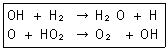

가스산업기사 (2007-05-13 기출문제)
1과목: 연소공학
1. 폭발범위가 넓은 것부터 차례로 된 것은?
- 일산화탄소 ＞ 메탄 ＞ 프로판
- 일산화탄소 ＞ 프로판 ＞ 메탄
- 프로판 ＞ 메탄 ＞ 일산화탄소
- 메탄 ＞ 프로판 ＞ 일산화탄소
(정답률: 84%)

2. 일산화탄소와 수소의 부피비가 3:7인 혼합가스의 온도 100℃, 50atm에서의 밀도는 약 몇 g/L인가?
- 16
- 18
- 21
- 23
(정답률: 51%)
3. 가연성 물질의 인화 특성에 대한 설명 중 틀린 것은?
- 증기압을 높게 하면 인화위험이 커진다.
- 연소범위가 넓을수록 인화위험이 커진다.
- 비점이 낮을수록 인화위험이 커진다.
- 최소점화에너지가 높을수록 인화위험이 커진다.
(정답률: 84%)
4. 동절기에 사용할 수 있도록 물소화약제의 단점을 보완하기 위하여 제조하는 강화액에 용해시키는 물질은 무엇인가?
- 제1인산암모늄
- 중탄산나트륨
- 탄산칼륨
- 황산알루미늄
(정답률: 68%)
5. 이산화탄소 32vol% O2 5vol% N2 63vol%의 혼합기체의 평균 분자량은 얼마인가?
- 29.3
- 31.3
- 33.3
- 35.3
(정답률: 78%)
6. 수소의 연소반응은 일반적으로 H2 ＋ 1/2O2 → H2O 로 알려져 있으나 실제 반응은 수많은 소반응이 연쇄적으로 일어난다고 한다. 다음은 무슨 반응에 해당 하는가?

- 연쇄창시반응
- 연쇄분지반응
- 기상정지반응
- 연쇄이동반응
(정답률: 92%)
7. 가정용 프로판에 대한 설명으로 옳은 것은?
- 공기보다 가볍다.
- 완전연소하면 탄산가스만 생성된다.
- 1몰의 프로판을 완전 연소 하는데 5몰의 산소가 필요하다.
- 프로판은 상온에서는 액화시킬 수 없다.
(정답률: 92%)
8. 연소에 대한 설명 중 틀린 것은?
- 공기 중의 산소 농도가 높아지면 연소속도는 빨라진다.
- 연소범위는 동일가스에 있어서도 온도와 압력에 따라 변한다.
- 연소의 화염온도는 혼합비에 관계없이 동일 연료에 대해서 일정하다.
- 연소의 난이성 정도는 산소와의 친화력과 밀접한 관계가 있다.
(정답률: 78%)
9. 연소온도에 직접적으로 영향을 미치는 인자가 아닌 것은?
- 연료 저위발열량
- 열전도도
- 공기비
- 산소농도
(정답률: 53%)
10. CmHn(탄화수소) 1Nm3이 연소하여 생기는 물의 양은 몇 Nm3인가?
- n/4
- n/2
- n
- m＋n/4
(정답률: 77%)
11. 폭굉에 대한 설명으로 옳은 것은?
- 가연성가스의 폭굉범위는 폭발범위보다 좁다.
- 같은 조건에서 일산화탄소는 프로판의 폭굉속도보다 빠르다.
- 폭굉이 발생할 때 압력은 순간적으로 상승되었다가 원상으로 곧 돌아오므로 큰 파괴현상은 동반하지 않는다.
- 폭굉 압력파는 미연소 가스 속으로 음속 이하로 이동한다.
(정답률: 59%)
12. 안전간격에 대한 설명 중 틀린 것은?
- 안전간격은 방폭전기기기 등의 설계에 중요하다.
- 한계직경은 가는 관 내부를 화염이 진행할 때 도중에 꺼지는 한계의 직경이다.
- 두 평행판 간의 거리를 화염이 전하하지 않을 때까지 좁혔을 때 그 거리를 소염거리라고 한다.
- 발화의 제반조건을 갖추었을 때 화염이 최대한으로 전파되는 거리를 화염일주라고 한다.
(정답률: 80%)
13. 석유정제 과정에서 일반적으로 발생될 수 없는 가스는?
- 암모니아 가스
- 프로판 가스
- 메탄가스
- 부탄가스
(정답률: 80%)
14. 연소관리에 있어서 배기가스를 분석하는 가장 큰 목적은?
- 노내압 조절
- 공기비 계산
- 연소열량 계산
- 매연농도 산출
(정답률: 65%)
15. 가스를 그대로 대기 중에 분출하여 연소시키며, 연소에 필요한 공기는 모두 불꽃 주변에서 확산에 의해 취하게 되고, 연소과정이 아주 늦고 불꽃이 길게 늘어나 적황색을 Elf 수도 있는 연소 방식은?
- 분젠식 연소법
- 적화식 연소법
- 세미 분젠식 연소법
- Brast식 연소법
(정답률: 64%)
16. 연소 또는 폭발의 3요소로서 가장 거리가 먼 것은?
- 가연성 물질
- 산소공급원
- 점화원
- 온도
(정답률: 92%)
17. 다음 각 물질의 일반적인 연소형태로서 틀린 것은?
- 경유 - 예혼합연소
- 에테르 - 증발연소
- 아세틸렌 - 확산연소
- 양초 - 증발연소
(정답률: 70%)
18. 중유의 저위발열량이 10000kcal/kg의 연료 1kg을 연소시킨 결과 연소열은 5500kcal/kg이었다. 연소효율은 얼마인가?
- 15%
- 55%
- 65%
- 75%
(정답률: 90%)
19. BLEVE현상 에 대한 설명으로 가장 옳은 것은?
- 물이 점성이 뜨거운 기름 표면 아래서 끓을 때 연소를 동반하지 않고 오버플로우 되는 현상
- 물이 연소유의 뜨거운 표면에 들어갈 때 발생되는 오버플로우 현상
- 탱크바닥에 물과 기름의 에멀젼이 섞여있을 때 기름의 비등으로 인하여 급격하게 오버플로우 되는 현상.
- 과열 상태의 탱크에서 내부의 액화 가스가 분출, 기화 되어 착화되었을 때 폭발적으로 증발하는 현상.
(정답률: 89%)
20. 폭발사고 후의 긴급 안전대책으로 가장 거리가 먼 것은?
- 위험물질을 다른 곳으로 옮긴다.
- 타 공장에 파급되지 않도록 가열원, 동력원을 모두 끈다.
- 장치 내 가연성 기체를 긴급히 비활성 기체로 치환 시킨다.
- 폭발의 위험성이 있는 건물은 방화구조와 내화구조로 한다.
(정답률: 70%)
2과목: 가스설비
21. 다음 중 특정설비가 아닌 것은?
- 기화 장치
- 독성가스 배관용 밸브
- 특정고압가스용 실린더 캐비넷
- 초저온 용기
(정답률: 75%)
22. 매설배관의 경우에는 유기물질 재료를 피복재로 사용하면 방식이 된다. 이중 타르 에폭시 피복재의 특성에 대한 설명 중 틀린 것은?
- 저온 시에도 경화가 빠르다.
- 밀착성이 좋다.
- 내마모성이 크다.
- 토양응력에 강하다.
(정답률: 67%)
23. 공기액화분리장치의 폭발원인으로 가장 거리가 먼 것은?
- 공기 취입구로부터 사염화탄소의 침입
- 압축기용 윤활유의 분해에 따른 탄화수소의 생성
- 공기 중에 있는 질소 화합물의 흡입
- 액체 공기 중의 오존의 혼입
(정답률: 78%)
24. 캐비테이션 현상의 발생 방지책에 대한 설명으로 가장 거리가 먼 것은?
- 펌프의 회전수를 높인다.
- 흡입 관경을 크게 한다.
- 펌프의 위치를 낮춘다.
- 양흡입 펌프를 사용한다.
(정답률: 83%)
25. 부취제의 구비조건이 아닌 것은?
- 도관을 부식하지 않을 것
- 일상생활과 구분되는 냄새일 것
- 연소 후에도 냄새가 남아있을 것
- 토양에 대한 투과성이 클 것
(정답률: 75%)
26. 사용압력이 60㎏/cm2 관의 허용응력이 20㎏/mm2일 때의 스케줄 번호는 얼마인가?
- 15
- 20
- 30
- 60
(정답률: 88%)
27. 저온, 고압 재료로 사용되는 특수강의 구비 조건 중 틀린 것은?
- 접촉 유체에 대한 내식성이 클 것
- 조작 중 예상되는 고온에 대해 기계적 강도를 가질 것
- 크리이프 강도가 작을 것
- 저온에서 재질의 노화를 일으키지 않을 것
(정답률: 80%)
28. 고압장치 배관 내를 흐르는 유체가 고온이면 열응력이 발생한다. 열응력을 제거하기 위한 이음이 아닌 것은?
- 벨로우즈 이음
- 유니온 이음
- U밴드 이음.
- 스위블 이음
(정답률: 50%)
29. 고압가스용기의 재료로 사용되는 강의 성분 중 탄소량이 증가할수록 감소하는 것은?
- 연신율
- 인장강도
- 경도
- 항복점
(정답률: 77%)
30. 전양정이 54m 유량이 1.2m3/min인 펌프로 물을 이송하는 경우 이 펌프의 축동력(PS)은? (단, 펌프의 효율은 80%, 밀도는 1g/cm3이다.)
- 13
- 18
- 23
- 28
(정답률: 66%)
31. 지상에 설치된 액화석유 가스의 저장탱크와 가스충전 장소와의 사이에 반드시 설치하여야하는 것은?
- 경계표지
- 방호벽
- 물분무설비
- 방류둑
(정답률: 86%)
32. 액화석유가스 자동절체식 일체형 저압조정기의 조정 압력은?
- 1.3~3.3kpa
- 2.55~3.3kpa
- 5~30kpa
- 0.032~0.083mpa
(정답률: 51%)
33. 매설관의 전기방식법 중 유전양극법에 대한 설명으로 옳은 것은?
- 강한 전식에 대해서도 효과가 좋다.
- 양극만 소모되므로 보충할 필요가 없다.
- 타 매설물에의 간섭이 거의 없다.
- 방식전류의 세기(강도) 조절이 자유롭다.
(정답률: 68%)
34. 압축기에서 압축비가 커질 때의 영향으로 틀린 것은?
- 토출가스 온도 상승
- 소요동력 증가
- 체적효율증가
- 실린더 과열
(정답률: 55%)
35. 작동식정압기와 비교한 파일럿식 정압기의 특성에 대한 설명 중 틀린 것은?
- 오프셋은 커진다.
- 대용량이다.
- 요구 유량제어 범위가 넓은 경우에 적합하다.
- 높은 압력제어 정도가 요구되는 경우에 적합하다.
(정답률: 81%)
36. 액화석유가스의 충전용기 보관실은 가로 5m 세로 4m 높이 3m이다. 이때 환기구의 통풍 면적은 약 몇 cm2이어야 하는가? (단, 철망이 부착된 환기구로 가정하고 철망이 차지하는 면적의 합은 1000cm2이다.)
- 4000
- 5000
- 6000
- 7000
(정답률: 32%)
37. 도시가스 원료로서 나프타를 사용할 경우 어느 탄화수소 성분이 많아야 가스화 효율이 높아지는가?
- 나프타계
- 파라핀계
- 올레핀계
- 방향족계
(정답률: 75%)
38. 다음 중 재료에 대한 비파괴 검사 방법이 아닌 것은?
- 타진법
- 초음파탐상시험법
- 인장시험법
- 방사선투과시험법]
(정답률: 69%)
39. 내용적이 300l 인 고압가스 강제용기의 방사선투과검사 방법에 대한 설명 중 틀린 것은?
- 2중벽단상 또는 단일벽 단상 촬영방법으로 실시한다.
- 투과사진의 상질은 보통급으로 한다.
- 계조계는 원둘레이음매의 경우에만 사용한다.
- 촬영부위는 길이이음과 원둘레이음과의 교차부도 포함 한다.
(정답률: 53%)
40. LNG의 기화에 일반적으로 사용되지 않는 기화기는?
- 오픈 랙 기화기
- 서브머지드 컨버젼 기화기
- 중간매체식 기화기
- 전기가열식 기화기
(정답률: 62%)
3과목: 가스안전관리
41. 액화석유가스는 공기 중에서 누출 시 그 농도가 몇 % 일 때 감지할 수 있도록 냄새가 나는 물질(부취제)을 혼합 하는가?
- 0.1
- 0.3
- 1
- 3
(정답률: 54%)
42. 산화에틸렌을 저장탱크 또는 용기에 충전할 경우의 기준 중 틀린 것은?
- 충전 전에 미리 그 내부가스를 질소가스 또는 탄산가스로 바꾼 후에 충전하여야 한다.
- 저장탱크 또는 용기의 내부에는 산 또는 알칼리를 함유하지 않은 상태이어야 한다.
- 질소가스 또는 탄산가스로 치환한 후의 저장탱크는 10도 이하로 유지하여야 한다.
- 저장탱크 및 충전용기에는 45도에서 그 내부가스의 압력이 0.4mpa 이상이 되도록 질소가스 또는 탄산가스를 충전하여야 한다.
(정답률: 46%)
43. 아세틸렌을 용기에 충전 시 다공질물의 다공도는 얼마 이상 , 얼마 미만으로 하여야 하는가?
- 72% 이상 92% 미만
- 72% 이상 95% 미만
- 75% 이상 92% 미만
- 75% 이상 95% 미만
(정답률: 84%)
44. 37.2l의 용접용기에 대하여 신규검사 후 5년이 경과 하였다면 재검사 주기는?
- 1년 마다
- 2년 마다
- 3년마다
- 5년마다
(정답률: 39%)
45. 다음 중 용기의 각인 표시 기호로 틀린 것은?
- 내용적 : V
- 내압시험압력 : TP
- 최고충전압력 : HP
- 동판 두께 : t
(정답률: 90%)
46. 고압가스 특정 제조시설의 배관 장치에 반드시 설치하여야 하는 안전제어 장치에 해당되지 않는 것은?
- 압력 안전장치
- 긴급차단 장치
- 가스누출검지 경보장치
- 내부반응 감시 장치
(정답률: 64%)
47. 자동차에 고정된 탱크로 납붙임 또는 접합용기에 액화 석유가스를 충전하는 때의 가스의 압력은 35도에서 몇 mpa 미만이 되도록 하여야 하는가?
- 0.1
- 0.2
- 0.3
- 0.5
(정답률: 32%)
48. 공정에 존재하는 위험요소들과 공정의 효율을 떨어뜨릴 수 있는 운전상의 문제점을 찾아내어 그 원인을 제거 하는 정성 적인 안전성 평가기법은?
- 위험과 운전 분석기법
- 이상위험도 분석기법
- 결함수 분석기법
- 작업자실수 분석기법
(정답률: 79%)
49. 일반적으로 압축가스 용기 운반 시에는 눕혀서 적재하지만 액화가스 충전용기 운반 시에는 원칙적으로 세워서 적재하는 가장 큰 이유는?
- 용기의 밸브가 다른 용기보다 크기 때문
- 이상 압력이 발생할 수 있기 때문
- 세워서 운반하기 좋은 구조이기 때문
- 햇빛에 노출되는 면적이 작아지기 때문
(정답률: 85%)
50. 압력조정기 출구에서 연소기 입구까지의 배관 및 호스는 얼마 이상의 압력으로 기밀시험을 하였을 때 누출이 없어야하는가?
- 3.5kpa
- 8.4kpa
- 35kpa
- 84kpa
(정답률: 75%)
51. 차량에 고정된 2개 이상을 상호 연결한 이음매 없는 용기에 의하여 고압가스를 운반하는 차량에 대한 기준 중 틀린 것은?
- 용기 상호 간 또는 용기와 차량과의 사이를 단단하게 부착하는 조치를 한다.
- 충전관에는 안전밸브, 압력계 및 긴급 탈압밸브를 설치한다.
- 차량의 보기 쉬운 곳에 '위험고압가스'라는 경계표시를 한다.
- 용기의 주 밸브는 1개로 통일하여 긴급차단장치와 연결한다.
(정답률: 81%)
52. 메탄 80vol% 와 아세틸렌 20vol%로 혼합된 혼합가스의 공기 중 폭발한 한계는 얼마인가?
- 3.4%
- 4.3%
- 5.4%
- 6.3%
(정답률: 69%)
53. 고압가스 제조 시 압축하면 안 되는 경우는?
- 가연성 가스 (아세틸렌, 에틸렌 및 수소를 제외) 중 산소 용량이 전용량의 2%일 때
- 산소 중의 가연성 가스 (아세틸렌, 에틸렌 및 수소를 제외)의 용량이 전용량의 2%일 때
- 아세틸렌, 에틸렌 또는 수소 중의 산소용량이 전용량의 3%일 때
- 산소 중 아세틸렌, 에틸렌 및 수소의 용량 합계가 전용량의 1%일 때
(정답률: 74%)
54. 도시가스 제조 시설에 설치하는 벤트스택의 설치에 대한 설명 중 틀린 것은?
- 벤트스택 높이는 방출된 가스의 착지농도가 폭발 상한계값 미만이 되도록 한다.
- 벤트스택에는 액화가스가 함께 방출되지 않도록 하는 조치를 한다.
- 벤트스택 방출구는 작업원이 통행하는 장소로부터 5m이상 떨어진 곳에 설치한다.
- 벤트스택에 연결된 배관에는 응축액의 고임을 제거할 수 있는 조치를 하여야한다.
(정답률: 76%)
55. 가스공급자는 일반수요자에게 액화석유가스를 공급할 경우 체적 판매방법에 의하여 공급하여야 한다. 다음 중 중량 판매방법에 의하여 공급할 수 있는 경우는?
- 병원에서 LPG 용기를 사용하는 경우
- 학교에서 LPG 용기를 사용하는 경우
- 교회에서 LPG 용기를 사용하는 경우
- 경로당에서 LPG 용기를 사용하는 경우
(정답률: 63%)
56. 액화석유가스 저장설비 및 가스설비실의 통풍구조 기준에 대한 설명으로 옳은 것은?
- 사방을 방호벽으로 설치하는 경우 한 방향으로 2개소의 환기구를 설치한다.
- 환기구의 1개소 면적은 2400cm2 이하로 한다.
- 강제통풍 시설의 방출구는 지면에서 2m 이상의 높이에 설치한다.
- 강제통풍 시설의 통풍능력은 1m2 마다 0.1m3/분 이상으로 한다.
(정답률: 72%)
57. 다음 중 가연성 가스가 아닌 것은?
- 아세트알데히드
- 일산화탄소
- 산화에틸렌
- 염소
(정답률: 83%)
58. 저장능력이 2톤인 액화석유가스 저장설비는 화기취급 장소와 몇 m 이상의 우회거리를 유지하여야 하는가?
- 2
- 5
- 8
- 10
(정답률: 35%)
59. 액화석유가스자동차충전소에 설치할 수 있는 건축물 또는 시설은?
- 액화석유가스충전사업자가 운영하고 있는 용기를 재검사하기 위한 시설.
- 충전소의 종사자가 이용하기 위한 연면적 200m2 이하의 식당
- 충전소를 출입하는 사람을 위한 연면적 200m2 이하의 매점
- 공구 등을 보관하기 위한 연면적 200m2 이하의 창고
(정답률: 77%)
60. 다음 중 대기에 방출 되었을 때 가장 빨리 공기 중으로 확산되는 가스는?
- 부탄
- 프로판
- 질소
- 산소
(정답률: 65%)
4과목: 가스계측
61. 다음 제어에 대한 설명 중 옳지 않은 것은?
- 조작량이란 제어장치가 제어대상에 가하는 제어신호이다.
- 제어량이란 제어를 받는 제어계의 출력량으로서 제어대상에 속하는 양이다.
- 기준압력이란 제어계를 동작시키는 기준으로서 직접 폐루프에 가해지는 입력신호이다.
- 목표치란 임의의 값을 정하지 않는 무한대 값이다.
(정답률: 81%)
62. 정확한 계량이 가능하여 기준기로 이용되며, 드럼의 회전수로 유량을 산출하는 가스미터는?
- 건식가스미터
- 루트미터
- 막식가스미터
- 습식가스미터
(정답률: 81%)
63. 가스크로마토그래피로 A,B,C 3성분을 분석하였더니, 그 상대 면적이 각각 100. 300. 200mm2이었다. 이들 3성분의 보정 계수가 각각 1. 0.6 그리고 0.5라고 하면 A 성분의 함유량은 약 몇 %인가?(오류 신고가 접수된 문제입니다. 반드시 정답과 해설을 확인하시기 바랍니다.)
- 10
- 15
- 16.7
- 26.3
(정답률: 28%)
64. 온도 25도 기압760mmHg인 대기 속의 풍속을 피토관으로 측정하였더니 전압이 대기압보다 40mmH2O 높았다. 이때 풍속은 약 몇 m/s인가? (단 피스톤 속도계수 (C) : 0.9 공기의 기체상수 (R) : 29.27kgf·m/kg·k이다)
- 17.2
- 23.2
- 32.2
- 37.4
(정답률: 61%)
65. 다음 시료가스 중 적외선 분광법으로 측정이 가능한 것은?
- O2
- SO2
- N2
- Cl2
(정답률: 50%)
66. 100psi를 atm으로 환산하면 약 몇 atm인가?
- 4.8
- 5.8
- 6.8
- 7.8
(정답률: 75%)
67. 액주식 압력계에 사용하는 액주가 가주어야 할 조건으로 옳지 않은 것은?
- 순수한 액체일 것
- 온도에 대한 액의 밀도변화가 작을 것
- 모세관 현상이 클 것
- 유독한 증기를 발생시키지 않을 것
(정답률: 80%)
68. 열전대 온도계의 일반적인 종류로서 옳지 않은 것은?
- 구리 – 콘스탄탄
- 백금 - 백금로듐
- 크로멜 – 콘스탄탄
- 크로멜 - 알루멜
(정답률: 84%)
69. 가스크로마토그래피에서 전개제로 주로 사용되는 가스는?
- He
- CO
- Rn
- Kr
(정답률: 87%)
70. 막식가스미터의 고장 중 가스가 가스미터를 통과하지 못하는 불통의 발생 원인으로 가장 거리가 먼 것은?
- 크랭크축이 녹슬었을 때
- 밸브시트에 이물질이 점착되었을 때
- 회전장치에 고장이 발생하였을 때
- 계량막이 파손되었을 때
(정답률: 64%)
71. 가스의 굴절률 차를 이용하여 가연성 가스의 농도를 측정하는 검출기는?
- 안전등형
- 간섭계형
- 연선형
- 검지관형
(정답률: 66%)
72. 온도변화에 대한 응답이 빠르나 히스테리시스 오차가 발생될 수 있고, 온도조절 스위치나 자동기록장치에 주로 사용되는 온도계는?
- 열전대 온도계
- 압력식 온도계
- 바이메탈식 온도계
- 서미스터
(정답률: 61%)
73. 용적식 유량계의 특징에 대한 설명 중 옳지 않은 것은?
- 유체의 물성치에 의한 영향을 거의 받지 않는다.
- 점도가 높은 액의 유량 측정에는 적합하지 않다.
- 유량계 전후의 작관길이에 영향을 받지 않는다.
- 외부 에너지의 공급이 없어도 측정할 수 있다.
(정답률: 56%)
74. 계측기기의 구비조건이 아닌 것은?
- 내구성이 좋아야 한다.
- 신뢰성이 높아야 한다.
- 복잡한 구조이어야 한다.
- 보수가 용이하여야 한다.
(정답률: 90%)
75. 계측기기의 감도에 대한 설명 중 틀린 것은?
- 감도가 좋으면 측정시간이 길어진다.
- 감도가 좋으면 측정범위가 좁아진다.
- 계측기가 측정량의 변화에 민감한 정도를 말한다.
- 측정량의 변화를 지시량의 변화로 나누어 준 값이다.
(정답률: 68%)
76. 가스미터에서 감도 유량의 의미를 가장 옳게 설명한 것은?
- 가스미터가 작동하기 시작하는 최소유량
- 가스미터가 정상상태를 유지하는 데 필요한 최소유량
- 가스미터 유량이 최대유량의 50%에 도달했을 때의 유량
- 가스미터 유량이 오차 한도를 벗어났을 때의 유량
(정답률: 72%)
77. 제어동작에 따른 분류 중 연속되는 동작은?
- on-off 동작
- 다위치 동작
- 단속도 동작
- 비례동작
(정답률: 87%)
78. 잔류편차가 없고 응답상태가 좋은 조절동작을 위한 가장 적절한 제어기는?
- p제어기
- pi제어기
- pd제어기
- pid제어기
(정답률: 56%)
79. 초음파의 송수파기에서 액면까지의 거리가 15m인 초음파 액면계에서 초음파가 수신될 때까지 0.3초가 걸렸다면 매질 중에서의 초음파의 전파속도는 약 몇 m/s인가?
- 12.5
- 25
- 50
- 100
(정답률: 41%)
80. 분별연소법 중 산화구리법에 의하여 주로 정량할 수 있는 가스는?
- O2
- N2
- CH4
- CO2
(정답률: 63%)